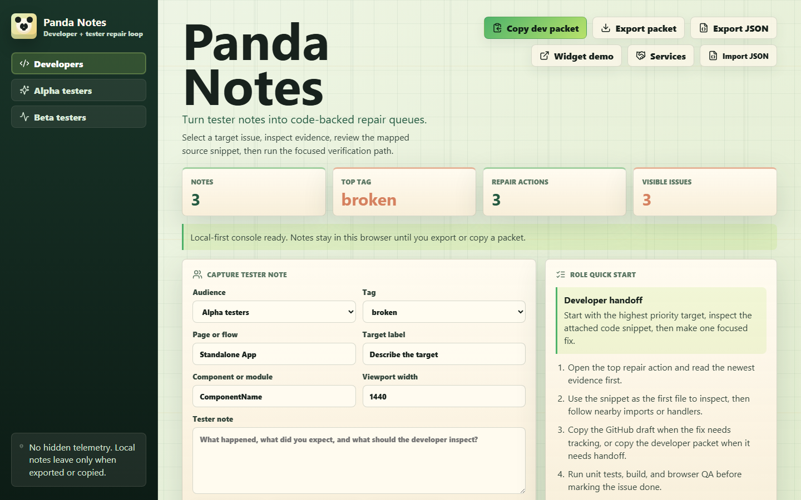

Who It Helps
Solo builders, small product teams, agencies, and QA-heavy beta projects that need tester notes turned into repair work instead of a loose chat thread.
Panda Notes gives developers, alpha testers, and beta testers a local-first note loop with exact target context, right-click capture, code hints, JSON exports, and GitHub-ready issue drafts.

Solo builders, small product teams, agencies, and QA-heavy beta projects that need tester notes turned into repair work instead of a loose chat thread.
It stays local-first, captures target context, creates developer handoff packets, and keeps private project details out of public issues by default.
The tool earns trust in public. Paid services sell setup sprints, feedback cleanup, developer handoff packs, and private integrations.
Pick a post and copy it when you are ready to share.